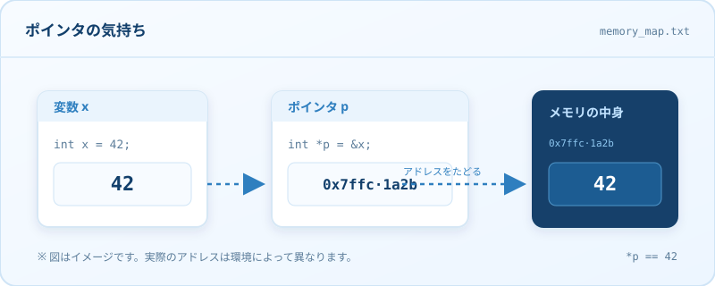

概要#
C言語は1972年、AT&Tベル研究所でUNIXを別のコンピュータへ移植しやすくするために生まれたプログラミング言語である。設計にはDennis M. RitchieとBrian W. Kernighanらが携わった。
得意分野はOSやデバイスドライバなど、ハードウェアに近いソフトウェア。ところが移植性の高さと実行速度のバランスが絶妙で、アプリケーションから組み込みシステムまで、気づけばあらゆる場所にC言語がいる。
現在ではC言語の上に新しい言語が積み上げられ、C言語自身は「土台」や「共通語」のような立場になった。とはいえ、土台がなければ何も建たない。縁の下の力持ちにして、舞台の主役でもあるのだ。
特徴#
最大の特徴は、ハードウェア寄りの低レベルな記述ができること。ポインタでメモリを直接つつき、ビットを数え、レジスタの気持ちを想像できる。プログラマーにできることを制限しない自由さはハッカーに好まれ、その自由さがバッファオーバーフローや未定義動作の温床にもなる。
文法は比較的簡素で、標準ライブラリも控えめ。文字列操作のたびに自分で長さを管理し、メモリを確保したら自分で解放する。JavaやC#のようなガベージコレクションは標準では用意されていない。自由と引き換えに、面倒も一緒についてくるわけである。

自由すぎるがゆえに、一見アスキーアートにしか見えないコードも書ける。保守やデバッグが難しくなりがちだが、そこがいいという声も多い。可読性は、しばしば実行速度と交換される。
初心者への優しさはあまり考慮されていない。大学の講義でC言語に挫折した経験を持つ人も少なくないだろう。だが、その厳しさを乗り越えた先には、コンピュータの仕組みが少し見える世界が待っている。
#include <stdio.h>
int main(void) {
const char *message = "Hello, 世界";
puts(message);
return 0;
}C言語あるある
- セミコロンを忘れて3分溶かす。
- ポインタの型が合わずに丸一日溶かす。
printfを入れたら直る（気がする）。- 「undefined behavior」で検索する回数が増える。
- 最後は
-Wall -Wextraに謝る。
派生言語#
拡張言語#
C言語の構文を土台に、用途を絞って拡張した言語もある。
- Objective-C — Appleの世界を支えた、C言語とSmalltalkのハイブリッド。
- CUDA — GPUで並列計算をするための拡張。C++寄り。